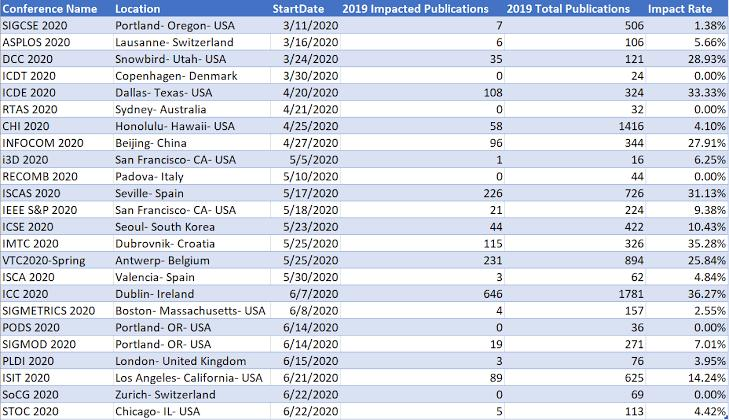

| Benha University Faculty of Engineering - Shoubra Academic year 2019-2020 |
 |
The question of how computer systems can make contributions to controlling the COVID-19 pandemic is being posed to professionals in synthetic intelligence (AI) all over the global.
AI equipment can help in lots of different approaches.
they may be being used to expect the unfold of the corona virus, map its genetic evolution as it transmits from human to human,
accelerate diagnosis, and in the development of capability treatments,
even as also helping policymakers cope with associated troubles, which include the effect on delivery, food materials and tour.
but in these kinds of cases, AI is best effective if it has enough examples to analyze from. As COVID-19 has taken the sector into unchartered territory, the "deep studying" systems, which computers use to acquire new skills, do not necessarily have the information they want to produce beneficial outputs
The Coronavirus pandemic has changed the world around us and is affecting our health, our financial system, our social interactions, and so much extra. laptop technology school and students affiliated with the AI Lab in CSE have partnered with clinicians and experts from different disciplines to deliver their knowledge to help with the outbreak and to help locate solutions
The table show the extent of the corona epidemic

Pre Page Referances NEXT PAGE